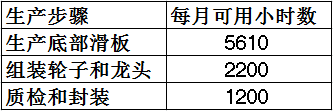
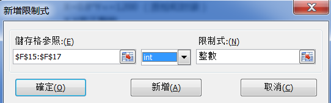
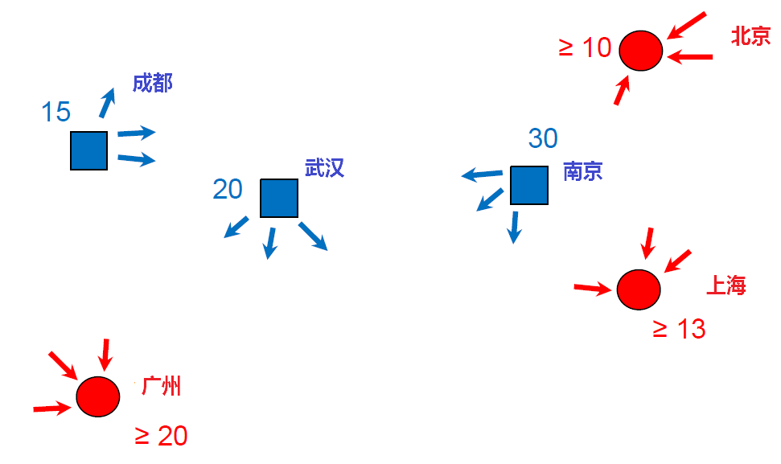
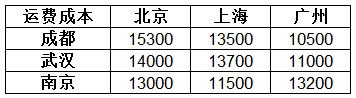

通过前面两篇文章，我们介绍了商业分析套路的三大招数：描述性分析、预测性分析和规范化分析，紧接着还详细列举了需求分析的几种实战方法，并且以此作为运营分析的开篇，所谓万事需求始嘛，把需求弄清楚，预测准是接下来做很多决策和执行很多商业计划的前提。
今天我们要学习的是「运营分析」中怎么样在低不确定性的场景下做最好的决定，属于三大招数中的规范化分析范畴，采用的方法是「规划求解」。
先简单的介绍一下规划求解是个什么样的招式，先看分解动作：
首先，把我们要解决的问题归结到一个可以清楚描述和衡量的指标上去，比如我们的目标是要利润最大化，是要成本最小化，是要客户满意值最大化等等。
其实，寻找并罗列出影响我们目标达成的可变因素，以利润最大化作为目标举例，生产多少产品，卖出多少产品，每个产品单价多少，成本多少，这些都可以说是影响利润的可变因素。
第三，发现并罗列出限制我们目标达成的因素，还是以利润最大化作为目标举例，我们的生产线一天最多能生产多少产品，我们的原材料可供消耗的还有多少，工人的人工工时每天可以这到多少，这些都会限制住我们的产量从而限制了利润。
第四，在限制范围内不断的调整可变因素以期实现我们的目标。
第一次接触这个方法的或许看完上面的步骤之后并没有一个很清晰的理解，没关系，我们马上进入演示和实践环节，考虑下面这个商业场景：
你厌倦了在家门口开个小杂货店，觉得这是荒废余生。你最近经常看到有好多小朋友都在你店门口的空地上玩滑板车，你一拍脑袋觉得这是个不错的生意啊，现在国家鼓励二胎，以后小朋友越来越多，这就是一群潜在客户呀。于是说干就干，问家里要了些起步资金，和朋友一起合伙开了个生产制造并销售滑板车厂，然后把生产出来的滑板车在自己的小店里销售。
事业刚起步，你们只打算生产两种滑板车，一种低端一点，型号是HB1，卖掉以后可以赚150元，另一种高端一点点，型号是HB1 Plus，卖掉以后可以赚160元。生产这样的滑板车，在生产流程上主要有三个步骤：生产底部滑板，组装轮子和龙头，最后质检和封装打包。生产这两种不同的滑板车在这三个步骤上所消耗的时间成本是不一样的，大致如下：
根据工厂现有的产能和工人数量，每个步骤每个月总共可供使用的时间如下：

假设市场好得不得了，两种滑板车都是供不应求，生产多少就能卖掉多少，那么你现在需要解决的问题就是，每个月应该分别生产多少台HB1和多少台HB1 Plus可以赚到更多呢？
我们直接把规划求解的四个步骤运用到这个实际的例子中：
第一步，明确目标是：要尽可能赚得多，也就是利润最大化。假设每个月的利润为Z，我目标就是让Z尽可能的大，越大越好。
第二步，罗列可变因素：马上能想到的影响利润的因素有两个，两种滑板车的生产数量。 我们假设每个月生产HB1的数量为X，生产HB1 Plus的数量为Y，那么用简单的代数公式来表述利润和生产数量的关系为：Z=150*X+160*Y
第三步，罗列可变因素的限制条件：很显然，因为产能有限，我们不可能生产无限多辆滑板车，具体到三个步骤，我们可以得到以下三个限制条件：
4*X+5*Y <= 5610
1.5*X+2*Y <=2200
X+0.8*Y<=1200
另外还有两个默认的但也是在下一步计算中需求考虑的限制条件，就是生产的滑板车数量肯定是整数而且不能小于0。
第四步：就需要对X和Y的取值进行调整，来实现Z的最大化。
假设我们X和Y都取500，也就是两种滑板车都生产500辆，看看可不可以。
利润：
Z = 500*(150+160) = 155000
限制：
满足 500(4+5) = 4500 < 5610
满足 500(1.5+2) = 1750 < 2200
满足 500*(1+0.8) = 900 < 1200
所以，两种滑板车都生产500台是可以满足我们的现有产能的，利润可以达到155000，但是显然这并不是最好的结果，在每一个步骤上都存在着产能浪费的情况。
怎么样可以快速的解决这个问题呢？可以使用Excel的「规划求解」功能。
第一步，在Excel中把上面例子中所提到的原始信息都列举出来：
第二步：用Excel自带公式把我们整理的目标、可变因素和限制条件也都列举出来：
1.可变因素X和Y，设置初始值为500，用蓝色字体突显如下：
2.目标值Z=150X+160Y，用红色字体突显如下，使用的公式是SUMPRODUCT：
3.三个限制条件：
第三步，使用Excel的规划求解功能：
1.在Data标签下的数据分析选项内有规划求解的按钮：
如果没有这个按钮，可以到Excel的功能选项中按照下面步骤调出：
2.设定目标以及对目标的期望值，选择我们目标值所在的单元格后我们这里要做的是最大化利润：
3.设定可变因素，选择我们的X和Y所在的单元格：
4.设定限制条件:
新增
三个步骤的实际消耗要小于可用量
新增成功：

新增整数限制：

5.求解：
点击求解按钮：
得到结果：
最终我们使用规划求解得到的结论是，生产840辆HB1和450辆HB1 Plus可以给你的滑板车公司带来最大的利润198000元，并且这种生产方式对资源的利用率是最好的。
以上是我们使用规划求解的方法解决营运分析中有关资源配置的问题的一个例子。我们再举一个使用规划求解的方法解决物流网络上的供需调度问题的例子。考虑下面这样的业务场景：
利益于科学的商业分析和决策，你的滑板车事业发展的很快，不久之后就已经成为全国首屈一指的滑板车供货商了，于是你想着在全国建立三个仓库和三个配送中心来搭建自己的物流网络，以便于以更低的成本和更高的效率将你的滑板车销售到全国各地。三个配送中心分别建在北京、上海、广州，三个仓库分别设在成都、武汉和南京。
每个月，所有仓库都需要给配送中心发货，每个月的固定发货总量为65万辆，对应三个仓库的分配为：
同样根据每个月的销售需求，每个配送中心有最小的需求量，对应三个配送中心的最小需求量为：
整体情况用下面这个示意图表示:

每运送1万辆滑板车从不同的仓库到不同的配送中心的运输成本如下：

那么需要解决的问题是：如何安排每个仓库到每个配送中心的运输数量可以使运输成本最小？
我们还是把规划求解的四个步骤运用到这个例子中：
第一步，明确目标：要尽可能的减小成本，也就是成本最小化。用Z表示最终的所有运输成本，那么目标就是要让Z最小。
第二步，罗列可变因素：每个仓库到每个送中心的运输数量。这里一共有三个仓库和三个配送中心，那么一共就会有9个可变量:
X(成都->北京)
X(成都->上海)
X(成都->广州)
X(武汉->北京)
X(武汉->上海)
X(武汉->广州)
X(南京->北京)
X(南京->上海)
X(南京->广州)
这些可变量与目标值的关系为：
Z=15300*X(成都->北京)+13500*X(成都->上海)+10500*X(成都->广州)+14000*X(武汉->北京)+13700*X(武汉->上海)+11000*X(武汉->广州)+13000*X(南京->北京)+11500*X(南京->上海)+13200*X(南京->广州)
第三步，罗列可变因素的限制条件：仓库的出货量要满足每个仓库的需求，配送中心的需求量要达到每个配送中心的最低要求。
X(成都->北京)+X(成都->上海)+X(成都->广州) = 15
X(武汉->北京)+X(武汉->上海)+X(武汉->广州) = 20
X(南京->北京)+X(南京->上海)+X(南京->广州) = 30
X(成都->北京)+X(武汉->北京)+X(南京->北京) >= 10
X(南京->北京)+X(武汉->上海)+X(南京->上海) >= 13
X(成都->广州)+X(武汉->广州)+X(南京->广州) >= 20
第四步，使用Excel的规划求解功能根据以上三点所列的目标、可变因素和限制条件进行求解，具体计算过程参考第一个例子里的详细步骤，这里直接给出最终计算结果：
可见，总共仓库的出货量65辆滑板车中，把成都和武汉仓库的合计35万辆全部运往广州，把南京仓库的30万辆运10万到北京20万到上海可以使得运输成本最低。
最后再小结一下，通过上面两个例子，可以学习到的是使用规划求解的方法来解决企业在生产制造是的产能资源分配问题以及在物流网络中的供需调度问题，这样的业务问题在实际的商业活动中是非常普遍的，通过明确目标、选定可变因素、设定限制条件之后，我们可以使用Excel自带的规划求解功能快速高效的得到最优的结果。这样的规划求解方法和工具是我们运营分析中解决低不确定性问题可以采用的一种普遍方案。